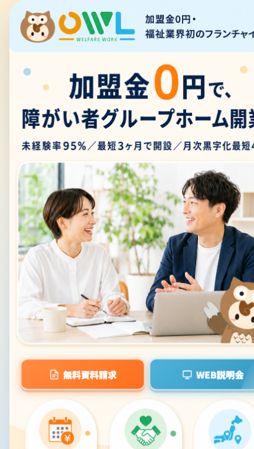
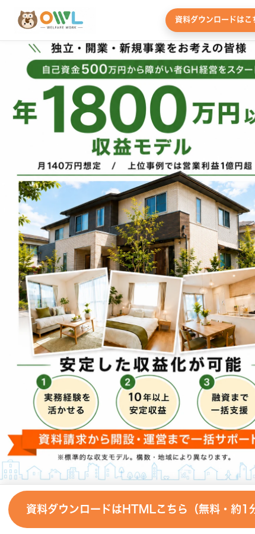

OWL LP施策 承認依頼（2件）2026-07-22 ／ 星崎
OWLのLPで2つの施策を進めたく、公開OKをいただきました。ありがとうございます。
① 現行「0円プラン」LPのファーストビュー（FV）を新デザイン（A案）に差し替え
② 資料請求型LP「独立・開業・新規事業」を公開
どちらも公開前に「キーワードの選定」と「予算」を鈴木さんにご確認・ご承認いただき、その承認後に実施します。
施策①：現行「0円プラン」LPのFVを新デザイン(A案)に差し替え
現在

今のFV
→
差し替え後

新FV A案（lp_v3_a）
「加盟金0円 × 月商300万モデル」で、"始めやすさ"と"儲かる金額"を最初に見せる形にします。LPの中身・URLはそのまま、FV（最初の画面）だけ差し替えます。
施策②：資料請求型LP「独立・開業・新規事業」を公開
公開（資料請求型）

資料請求型LP（独立・開業・新規事業）
福祉は未経験だが独立・開業・新規事業を考えている層を狙う資料請求型のLPです。現行の0円プランLP（顕在層）とターゲットが違うので棲み分けます。
FV：「自己資金500万円から障がいGH経営をスタート／年1800万円以上の収益モデル（月140万円想定）」＋資料ダウンロード（無料・約1分）。
キーワードの選定（2つのLP分・いずれもTO側／河合さん非重複）
2つのLPはターゲットが違うので、狙うワードも分けます。いずれもTO側（鈴木さん領域）で、河合さんのFC系ワードとは重複しません（owl-adsの除外KW整理で確定済み）。追加は週1の突き合わせで確認のうえ行います。
| LP | 狙うキーワード |
|---|---|
| ①現行0円プラン （顕在層） | グループホーム 経営開業障害者グループホーム 経営／開業障害者支援 事業 開業共同生活援助 開業 追加候補：開設立ち上げ開業 費用／資金経営 儲かる未経験 |
| ②資料請求型LP （独立・開業・新規事業層） | 福祉 独立介護 独立起業 福祉起業 介護 |
「フランチャイズ」を含むワードは河合さんの領域のため使いません。境界KW（例：不動産 福祉 投資）は追加する場合のみ、事前に河合さんと確認します。
予算（ご確認・ご決定ください）
| キャンペーン | 状態 | 日予算 |
|---|---|---|
| TO-OWL-GH-Google-CP01（①現行0円プラン） | 維持 | ¥13,333/日（現状） |
| TO-OWL-GH-Yahoo-CP01（①のYahoo枠） | 要判断 | ¥13,300 → ¥5,000/日 へ減額を提案（1クリック¥921とGoogleの約2.8倍で割高のため） |
| TO-OWL-Independence（②資料請求型LP） | 新規 | 要ご決定（例：まず ¥3,000〜5,000/日 でテスト） |
金額に関わることは、鈴木さんのご決定・ご承認をいただいてから設定・変更します（減額・新規予算いずれも）。
公開までの流れ（このゲートを守ります）
🔒 キーワード・予算の承認をいただくまで、①②とも公開・変更しません
- 本シートで キーワード と 予算 をご確認
- 鈴木さんの承認（キーワードOK・予算OK）
- 承認後にはじめて → ①現行LPのFV差し替え ＋ ②資料請求型LPの公開・新キャンペーン配信開始
- 公開後は日次で数字（資料請求の入り）をご報告